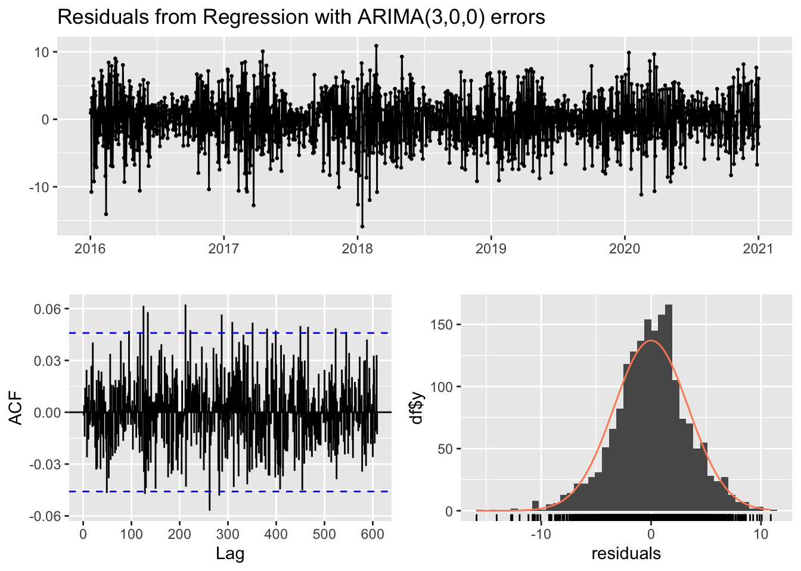
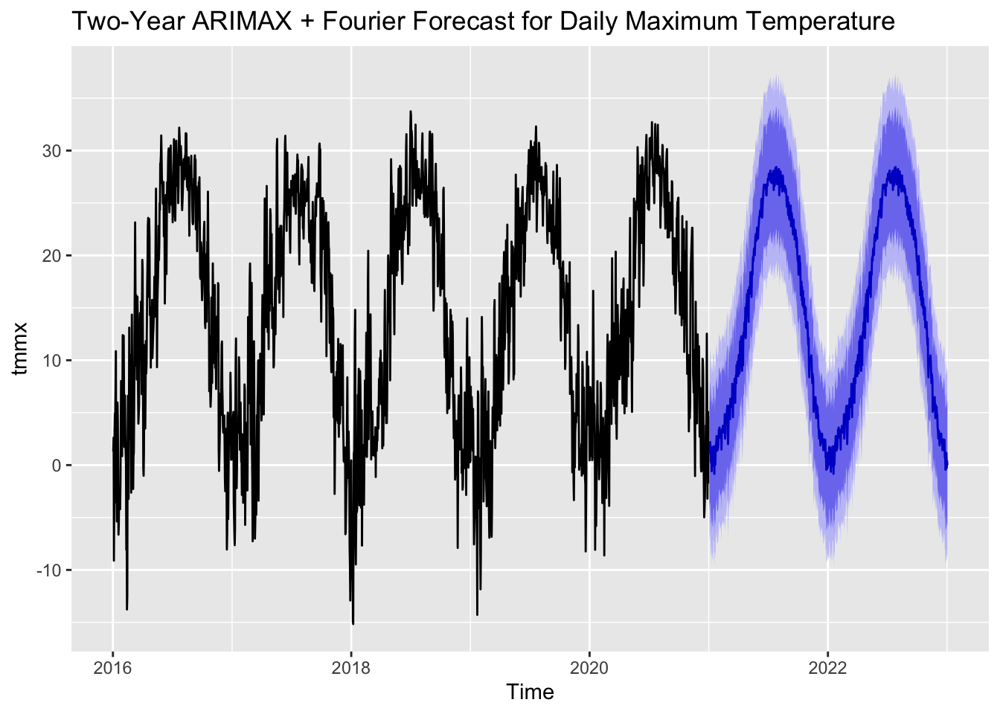
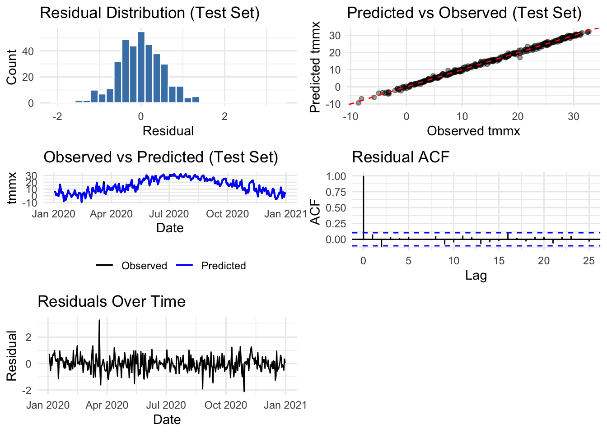
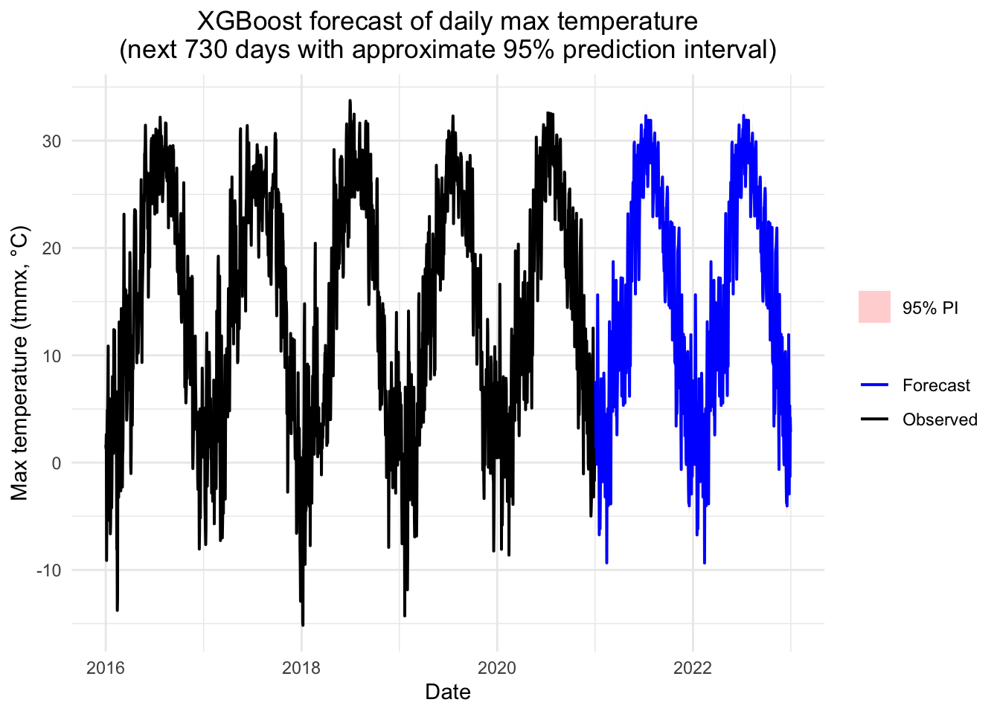

library(readr)
library(dplyr)##
## Attaching package: 'dplyr'## The following objects are masked from 'package:stats':
##
## filter, lag## The following objects are masked from 'package:base':
##
## intersect, setdiff, setequal, unionlibrary(lubridate)##
## Attaching package: 'lubridate'## The following objects are masked from 'package:base':
##
## date, intersect, setdiff, unionlibrary(forecast)## Registered S3 method overwritten by 'quantmod':
## method from
## as.zoo.data.frame zoolibrary(tidyr)
library(ggplot2)
library(tibble)
library(knitr)
library(forecast)
library(lubridate)
library(xgboost)## Warning: package 'xgboost' was built under R version 4.5.2library(stats)
library(grid) In this section we aggregate station‐level meteorological data to the New York State level and create lagged covariates that will be used as external regressors in the ARIMAX model.
data_raw <- read_csv("df_gen/data/meteor_2016to20_NY.csv")## Rows: 113274 Columns: 13
## ── Column specification ────────────────────────────────────────────────────────
## Delimiter: ","
## dbl (12): county, fips, sph, vpd, tmmn, tmmx, pr, rmin, rmax, srad, vs, th
## dttm (1): date
##
## ℹ Use `spec()` to retrieve the full column specification for this data.
## ℹ Specify the column types or set `show_col_types = FALSE` to quiet this message.dat <- data_raw |>
mutate(
tmmx = tmmx - 273.15,
tmmn = tmmn - 273.15,
year = year(date),
month = month(date)
)
dat_state <- dat %>%
group_by(date) %>%
summarise(
tmmx = mean(tmmx, na.rm = TRUE),
sph = mean(sph, na.rm = TRUE),
vpd = mean(vpd, na.rm = TRUE),
srad = mean(srad, na.rm = TRUE),
vs = mean(vs, na.rm = TRUE)
) %>%
arrange(date)
dat_state_lag <- dat_state %>%
mutate(
sph_lag1 = dplyr::lag(sph, 1),
vpd_lag1 = dplyr::lag(vpd, 1),
srad_lag1 = dplyr::lag(srad, 1),
vs_lag1 = dplyr::lag(vs, 1)
) %>%
tidyr::drop_na()
start_year <- year(min(dat_state_lag$date))
start_doy <- yday(min(dat_state_lag$date))
tmmx_ts <- ts(
dat_state_lag$tmmx,
start = c(start_year, start_doy),
frequency = 365
)To represent strong annual seasonality, we use Fourier terms instead of a seasonal ARIMA structure. These Fourier harmonics, together with lagged meteorological covariates, enter the model as external regressors, while the error term follows a non-seasonal ARIMA process selected by auto.arima().
K <- 3
fourier_terms <- fourier(tmmx_ts, K = K)
xreg <- cbind(
fourier_terms,
sph_lag1 = dat_state_lag$sph_lag1,
vpd_lag1 = dat_state_lag$vpd_lag1,
srad_lag1 = dat_state_lag$srad_lag1,
vs_lag1 = dat_state_lag$vs_lag1
)
fit_arimax_fourier <- auto.arima(
tmmx_ts,
xreg = xreg,
seasonal = FALSE
)
model_info <- tibble(
Metric = c("Log-Likelihood", "Sigma^2", "AIC", "AICc", "BIC"),
Value = c(
as.numeric(logLik(fit_arimax_fourier)),
fit_arimax_fourier$sigma2,
fit_arimax_fourier$aic,
fit_arimax_fourier$aicc,
fit_arimax_fourier$bic
)
)
kable(
model_info,
digits = 4,
caption = "Overall fit statistics for the ARIMAX + Fourier model"
)| Metric | Value |
|---|---|
| Log-Likelihood | -4819.6440 |
| Sigma^2 | 11.5696 |
| AIC | 9669.2880 |
| AICc | 9669.5532 |
| BIC | 9751.9363 |
In this specification, the ARIMA component captures short-term temporal dependence, while Fourier terms describe the smooth annual cycle. Lagged humidity, vapor-pressure deficit, solar radiation, and wind speed account for additional meteorological drivers of temperature.
We present the estimated coefficients and standard errors for the AR terms, meteorological covariates, and Fourier harmonics.
coef_est <- coef(fit_arimax_fourier)
se_est <- sqrt(diag(vcov(fit_arimax_fourier)))
coef_tbl <- tibble(
Term = names(coef_est),
Estimate = as.numeric(coef_est),
SE = as.numeric(se_est)
)
kable(
coef_tbl,
digits = 4,
caption = "Coefficient estimates for ARIMAX + Fourier model"
)| Term | Estimate | SE |
|---|---|---|
| ar1 | 0.7726 | 0.0410 |
| ar2 | -0.2497 | 0.0375 |
| ar3 | 0.1078 | 0.0241 |
| intercept | 16.4607 | 0.9516 |
| S1-365 | -4.5286 | 0.3896 |
| C1-365 | -12.3698 | 0.7226 |
| S2-365 | 0.5384 | 0.3231 |
| C2-365 | -0.4380 | 0.3095 |
| S3-365 | 0.5627 | 0.3020 |
| C3-365 | -0.3102 | 0.3016 |
| sph_lag1 | -47.3621 | 101.2496 |
| vpd_lag1 | 0.1925 | 0.5844 |
| srad_lag1 | 0.0015 | 0.0023 |
| vs_lag1 | -0.4976 | 0.0547 |
We assess model adequacy by examining residuals. Ideally, residuals should behave like uncorrelated noise with no systematic temporal pattern.

| Statistic | Degrees.of.freedom | P.value | Model.df | Total.lags.used |
|---|---|---|---|---|
| 330.1 | 362 | 0.8844 | 3 | 365 |
The residual time series shows no obvious structure, the autocorrelation function remains within the 95% bounds at most lags, and the Ljung–Box test is non-significant. Together, these diagnostics suggest that the ARIMAX + Fourier model has captured most of the temporal dependence and seasonal pattern in the data, and the remaining residuals are approximately white noise.
We generate multi-step-ahead forecasts using the fitted ARIMAX + Fourier model. Future Fourier terms are constructed analytically, and recent lagged covariates are used to build the regressor matrix for the forecast horizon.
h <- 730
fourier_future <- fourier(tmmx_ts, K = K, h = h)
recent_block <- dat_state_lag %>%
slice_tail(n = 365)
xreg_future <- cbind(
fourier_future,
sph_lag1 = recent_block$sph_lag1,
vpd_lag1 = recent_block$vpd_lag1,
srad_lag1 = recent_block$srad_lag1,
vs_lag1 = recent_block$vs_lag1
)
fc <- forecast(fit_arimax_fourier, xreg = xreg_future, h = h)
autoplot(fc) +
ggtitle("Two-Year ARIMAX + Fourier Forecast for Daily Maximum Temperature") +
xlab("Time") +
ylab("tmmx")
The figure presents a two-year forecast of daily maximum temperature derived from an ARIMAX model augmented with Fourier seasonal terms. The historical portion of the time series (black) exhibits strong annual cycles and substantial short-term variability, both of which are captured by the model. The forecasted values (blue) follow a smooth, periodic pattern consistent with the dominant seasonal structure. The incorporation of Fourier harmonics allows the model to represent complex seasonal behavior more flexibly than classical seasonal ARIMA, resulting in coherent long-range forecasts that align with the historical climatological patterns.Daily statewide averages for all available meteorological variables were computed. Feature engineering included lag terms, rolling means, and time-based indicators (day of year, weekday, year), which help XGBoost capture temporal dependencies and short-term memory effects.
dat <- dat %>%
mutate(date = as.Date(date))
dat_state <- dat %>%
group_by(date) %>%
summarise(
tmmx = mean(tmmx, na.rm = TRUE),
tmmn = mean(tmmn, na.rm = TRUE),
sph = mean(sph, na.rm = TRUE),
vpd = mean(vpd, na.rm = TRUE),
pr = mean(pr, na.rm = TRUE),
rmin = mean(rmin, na.rm = TRUE),
rmax = mean(rmax, na.rm = TRUE),
srad = mean(srad, na.rm = TRUE),
vs = mean(vs, na.rm = TRUE),
th = mean(th, na.rm = TRUE)
) %>%
ungroup() %>%
arrange(date)
dat_ml <- dat_state %>%
mutate(
doy = yday(date),
dow = wday(date, week_start = 1),
year = year(date),
tmmx_lag1 = lag(tmmx, 1),
tmmx_lag2 = lag(tmmx, 2),
tmmx_lag7 = lag(tmmx, 7),
tmmn_lag1 = lag(tmmn, 1),
sph_lag1 = lag(sph, 1),
vpd_lag1 = lag(vpd, 1),
pr_lag1 = lag(pr, 1),
rmin_lag1 = lag(rmin, 1),
rmax_lag1 = lag(rmax, 1),
srad_lag1 = lag(srad, 1),
vs_lag1 = lag(vs, 1)
)
dat_ml$tmmx_roll7 <- as.numeric(stats::filter(dat_ml$tmmx, rep(1/7, 7), sides = 1))
dat_ml <- dat_ml %>% drop_na()The dataset was split chronologically (80% training, 20% testing). An XGBoost regression model was trained using RMSE as the optimization metric and early stopping to prevent overfitting.
split_date <- dat_ml$date[floor(nrow(dat_ml) * 0.8)]
train_df <- dat_ml %>% filter(date <= split_date)
test_df <- dat_ml %>% filter(date > split_date)
feature_cols <- c(
"tmmn","sph","vpd","pr","rmin","rmax","srad","vs","th",
"tmmx_lag1","tmmx_lag2","tmmx_lag7",
"tmmn_lag1","sph_lag1","vpd_lag1","pr_lag1",
"rmin_lag1","rmax_lag1","srad_lag1","vs_lag1",
"tmmx_roll7","doy","dow","year"
)
train_x <- as.matrix(train_df[, feature_cols])
train_y <- train_df$tmmx
test_x <- as.matrix(test_df[, feature_cols])
test_y <- test_df$tmmx
dtrain <- xgb.DMatrix(train_x, label = train_y)
dtest <- xgb.DMatrix(test_x, label = test_y)
params <- list(
objective = "reg:squarederror",
eval_metric = "rmse",
max_depth = 5,
eta = 0.05,
subsample = 0.8,
colsample_bytree = 0.8
)
set.seed(2025)
xgb_model <- xgb.train(
params = params,
data = dtrain,
nrounds = 1500,
evals = list(train = dtrain, eval = dtest),
early_stopping_rounds = 50,
verbose = 0
)
test_pred <- predict(xgb_model, dtest)
test_df <- test_df %>%
mutate(
pred = test_pred,
resid = tmmx - pred
)
rmse <- sqrt(mean((test_df$pred - test_df$tmmx)^2))
mae <- mean(abs(test_df$pred - test_df$tmmx))
mape <- mean(abs((test_df$pred - test_df$tmmx) / test_df$tmmx)) * 100
ss_res <- sum((test_df$tmmx - test_df$pred)^2)
ss_tot <- sum((test_df$tmmx - mean(test_df$tmmx))^2)
r2 <- 1 - ss_res / ss_tot
perf_xgb <- tibble::tibble(
Metric = c("RMSE", "MAE", "MAPE (%)", "R²"),
Value = c(rmse, mae, mape, r2)
)
knitr::kable(perf_xgb, digits=3, caption="XGBoost Model Performance (Test Set)")| Metric | Value |
|---|---|
| RMSE | 0.574 |
| MAE | 0.435 |
| MAPE (%) | 112.168 |
| R² | 0.997 |
Residual analysis evaluates whether the model captures structure adequately and whether remaining errors behave randomly.
p2 <- ggplot(test_df, aes(x = date)) +
geom_line(aes(y = tmmx, color = "Observed"), linewidth = 0.7) +
geom_line(aes(y = pred, color = "Predicted"), linewidth = 0.7) +
scale_color_manual(values = c("Observed" = "black", "Predicted" = "blue")) +
labs(title = "Observed vs Predicted (Test Set)",
x = "Date", y = "tmmx") +
theme_minimal() +
theme(legend.title = element_blank(),
legend.position = "bottom")
p3 <- ggplot(test_df, aes(x = date, y = resid)) +
geom_line() +
labs(title = "Residuals Over Time",
x = "Date", y = "Residual") +
theme_minimal()
acf_obj <- acf(test_df$resid, plot = FALSE)
acf_df <- with(acf_obj, data.frame(lag = lag, acf = acf))
n <- length(test_df$resid)
ci <- 1.96 / sqrt(n)
p5 <- ggplot(acf_df, aes(x = lag, y = acf)) +
geom_hline(yintercept = 0) +
geom_segment(aes(xend = lag, yend = 0)) +
geom_hline(yintercept = c(-ci, ci),
linetype = "dashed", colour = "blue") +
labs(title = "Residual ACF", x = "Lag", y = "ACF") +
theme_minimal()
p4 <- ggplot(test_df, aes(x = tmmx, y = pred)) +
geom_point(alpha = 0.4) +
geom_abline(slope = 1, intercept = 0,
colour = "red", linetype = "dashed") +
labs(title = "Predicted vs Observed (Test Set)",
x = "Observed tmmx", y = "Predicted tmmx") +
theme_minimal()
p1 <- ggplot(test_df, aes(x = resid)) +
geom_histogram(bins = 30, colour = "white", fill = "steelblue") +
labs(title = "Residual Distribution (Test Set)",
x = "Residual", y = "Count") +
theme_minimal()
multiplot <- function(..., plotlist=NULL, cols=1) {
library(grid)
plots <- c(list(...), plotlist)
numPlots <- length(plots)
layout <- matrix(seq(1, cols * ceiling(numPlots / cols)),
ncol = cols, nrow = ceiling(numPlots / cols))
grid.newpage()
pushViewport(viewport(layout = grid.layout(nrow(layout), ncol(layout))))
for (i in 1:numPlots) {
matchidx <- as.data.frame(which(layout == i, arr.ind = TRUE))
print(plots[[i]], vp = viewport(
layout.pos.row = matchidx$row,
layout.pos.col = matchidx$col
))
}
}
multiplot(p1,p2, p3, p4, p5, cols = 2)
The XGBoost model demonstrates strong predictive performance, with predicted values closely tracking observed temperatures across the test period. Residuals are centered around zero with no visible temporal patterns, and the ACF shows no meaningful autocorrelation, indicating well-behaved errors. The predicted-versus-observed scatterplot aligns tightly around the 45-degree line, and the residual distribution is approximately normal with small variance. Overall, the diagnostics suggest that XGBoost effectively captures the nonlinear and seasonal structure of the temperature series and produces accurate, unbiased predictions.
Future meteorological covariates were constructed by cycling the most recent 365-day pattern, enabling the model to simulate realistic seasonal dynamics.
dat_state <- dat %>%
mutate(date = as.Date(date)) %>%
group_by(date) %>%
summarise(
tmmx = mean(tmmx, na.rm = TRUE),
tmmn = mean(tmmn, na.rm = TRUE),
sph = mean(sph, na.rm = TRUE),
vpd = mean(vpd, na.rm = TRUE),
pr = mean(pr, na.rm = TRUE),
rmin = mean(rmin, na.rm = TRUE),
rmax = mean(rmax, na.rm = TRUE),
srad = mean(srad, na.rm = TRUE),
vs = mean(vs, na.rm = TRUE),
th = mean(th, na.rm = TRUE)
) %>%
ungroup() %>%
arrange(date)
last_365_block <- dat_state %>%
slice_tail(n = 365) %>%
select(tmmn, sph, vpd, pr, rmin, rmax, srad, vs, th)
h <- 730
future_list <- vector("list", length = h)
state <- dat_ml %>%
arrange(date) %>%
slice_tail(n = 7)
last_date <- max(state$date)
for (i in seq_len(h)) {
new_date <- last_date + i
idx <- ((i - 1) %% 365) + 1
exo_today <- last_365_block[idx, ]
tmp <- tibble::tibble(
date = new_date,
tmmn = exo_today$tmmn,
sph = exo_today$sph,
vpd = exo_today$vpd,
pr = exo_today$pr,
rmin = exo_today$rmin,
rmax = exo_today$rmax,
srad = exo_today$srad,
vs = exo_today$vs,
th = exo_today$th,
doy = yday(new_date),
dow = wday(new_date, week_start = 1),
year = year(new_date)
)
tmp <- tmp %>%
mutate(
tmmx_lag1 = state$tmmx[nrow(state)],
tmmx_lag2 = state$tmmx[nrow(state) - 1],
tmmx_lag7 = state$tmmx[nrow(state) - 6],
tmmn_lag1 = state$tmmn[nrow(state)],
sph_lag1 = state$sph[nrow(state)],
vpd_lag1 = state$vpd[nrow(state)],
pr_lag1 = state$pr[nrow(state)],
rmin_lag1 = state$rmin[nrow(state)],
rmax_lag1 = state$rmax[nrow(state)],
srad_lag1 = state$srad[nrow(state)],
vs_lag1 = state$vs[nrow(state)],
tmmx_roll7 = mean(state$tmmx)
)
x_new <- as.matrix(tmp[, feature_cols])
pred_new <- predict(xgb_model, xgb.DMatrix(x_new))
tmp$tmmx <- as.numeric(pred_new)
future_list[[i]] <- tmp
state <- dplyr::bind_rows(state, tmp)
state <- state %>% slice_tail(n = 7)
}
future_730 <- dplyr::bind_rows(future_list)
sd_resid <- sd(test_df$resid)
future_730 <- future_730 %>%
mutate(
tmmx_pred = tmmx,
lower_95 = tmmx_pred - 1.96 * sd_resid,
upper_95 = tmmx_pred + 1.96 * sd_resid
)
past_all <- dat_state %>%
arrange(date) %>%
select(date, tmmx) %>%
mutate(source = "Observed (all history)")
future_plot <- future_730 %>%
select(date, tmmx_pred, lower_95, upper_95) %>%
mutate(source = "XGBoost forecast")
ggplot() +
geom_line(data = past_all,
aes(x = date, y = tmmx, color = "Observed"),
linewidth = 0.7) +
geom_ribbon(data = future_plot,
aes(x = date, ymin = lower_95, ymax = upper_95, fill = "95% PI"),
alpha = 0.2, inherit.aes = FALSE) +
geom_line(data = future_plot,
aes(x = date, y = tmmx_pred, color = "Forecast"),
linewidth = 0.7) +
labs(
title = "XGBoost forecast of daily max temperature\n(next 730 days with approximate 95% prediction interval)",
x = "Date",
y = "Max temperature (tmmx, °C)"
) +
scale_color_manual(
values = c("Observed" = "black", "Forecast" = "blue")
) +
scale_fill_manual(
values = c("95% PI" = "red")
) +
theme_minimal() +
theme(
legend.title = element_blank(),
plot.title = element_text(hjust = 0.5)
)
This XGBoost model effectively captures nonlinear meteorological and temporal dependencies, delivering strong short-term predictive accuracy and stable long-horizon forecasts. The model serves as a complementary alternative to ARIMAX, offering improved flexibility in handling lagged covariates and complex interactions.ar_train <- dat_state_lag %>% filter(date <= split_date)
ar_test <- dat_state_lag %>% filter(date > split_date)
if (nrow(ar_test) == 0 | nrow(ar_train) == 0) {
stop("ARIMAX train/test split produced empty set. Check date ranges of dat_state_lag vs dat_ml.")
}
start_year <- year(min(ar_train$date))
start_doy <- yday(min(ar_train$date))
tmmx_ts_train <- ts(
ar_train$tmmx,
start = c(start_year, start_doy),
frequency = 365
)
K <- 3
fourier_train <- fourier(tmmx_ts_train, K = K)
xreg_train <- cbind(
fourier_train,
sph_lag1 = ar_train$sph_lag1,
vpd_lag1 = ar_train$vpd_lag1,
srad_lag1 = ar_train$srad_lag1,
vs_lag1 = ar_train$vs_lag1
)
fit_arimax_cv <- auto.arima(
tmmx_ts_train,
xreg = xreg_train,
seasonal = FALSE
)
h_test <- nrow(ar_test)
fourier_test <- fourier(tmmx_ts_train, K = K, h = h_test)
xreg_test <- cbind(
fourier_test,
sph_lag1 = ar_test$sph_lag1,
vpd_lag1 = ar_test$vpd_lag1,
srad_lag1 = ar_test$srad_lag1,
vs_lag1 = ar_test$vs_lag1
)
fc_test <- forecast(
fit_arimax_cv,
xreg = xreg_test,
h = h_test
)
ar_test <- ar_test %>%
mutate(arimax_pred = as.numeric(fc_test$mean))
compare_df <- test_df %>%
select(date, tmmx, xgb_pred = pred) %>%
inner_join(ar_test %>% select(date, arimax_pred),
by = "date") %>%
arrange(date)
if (nrow(compare_df) == 0) {
stop("No overlapping dates between XGBoost test_df and ARIMAX test set. Check date alignment.")
}
calc_metrics <- function(obs, pred) {
rmse <- sqrt(mean((pred - obs)^2))
mae <- mean(abs(pred - obs))
mape <- mean(abs((pred - obs) / obs)) * 100
ss_res <- sum((obs - pred)^2)
ss_tot <- sum((obs - mean(obs))^2)
r2 <- 1 - ss_res / ss_tot
c(RMSE = rmse, MAE = mae, MAPE = mape, R2 = r2)
}
m_arimax <- calc_metrics(compare_df$tmmx, compare_df$arimax_pred)
m_xgb <- calc_metrics(compare_df$tmmx, compare_df$xgb_pred)
model_compare <- tibble::tibble(
Model = c("ARIMAX + Fourier", "XGBoost"),
RMSE = c(m_arimax["RMSE"], m_xgb["RMSE"]),
MAE = c(m_arimax["MAE"], m_xgb["MAE"]),
MAPE = c(m_arimax["MAPE"], m_xgb["MAPE"]),
R2 = c(m_arimax["R2"], m_xgb["R2"])
)
kable(model_compare, digits = 3,
caption = "Performance comparison of ARIMAX + Fourier vs XGBoost on the same test dates")| Model | RMSE | MAE | MAPE | R2 |
|---|---|---|---|---|
| ARIMAX + Fourier | 8.593 | 7.608 | 1151.313 | 0.291 |
| XGBoost | 0.574 | 0.435 | 112.168 | 0.997 |
The test-set results show that XGBoost substantially outperforms the ARIMAX + Fourier model across all metrics, with far lower RMSE (0.57 vs. 8.59), MAE (0.43 vs. 7.61), and MAPE (112% vs. 1151%), as well as a much higher R² (0.997 vs. 0.291). These differences are consistent with the theoretical design of the two models. The ARIMAX + Fourier approach relies on linear relationships, predefined seasonal components, and a limited set of lagged regressors; as a result, it struggles to capture nonlinear temperature dynamics and complex interactions among meteorological variables. In contrast, XGBoost is a gradient-boosted ensemble model capable of learning highly flexible, nonlinear relationships and automatically capturing interactions among features, including multiple lags, rolling averages, and time-of-year effects. This flexibility allows it to model temperature patterns far more accurately. However, ARIMAX has advantages in interpretability and classical time-series structure, while XGBoost, despite its higher accuracy, behaves more like a black box and requires more computational resources. Overall, the comparison suggests that XGBoost is markedly better suited for predictive performance in this dataset, especially when nonlinear and interaction effects are important.